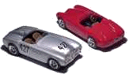
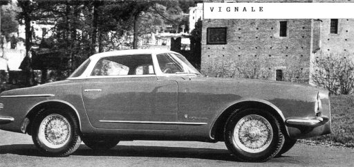

Carrozzeria Vignale · Alfa Romeo
Alfa Romeo by Vignale
1951 Alfa Romeo 412 Vignale
Image from Topmodelcollection

Vignale Alfa Romeo 1900

Image courtesy of: Mr Peter Marshall, Alfa Romeo 1900 Register.
1960 Alfa 2000cc Coupe by DG
In 1990, I purchased a 1960 Alfa 2000cc Coupe designed by Michelotti and fabricated by a coachbuilder in Turin, Italy, called Vignale.
I knew it was a strange Alfa when I first saw it, but I was not quite prepared for what is involved with the total restoration of a coachbuilt vehicle.
In the late fifties and early sixties, Alfa Romeo and their usual coachbuilders (Bertone Touring, Zagato and Pinin Farina) could hardly keep up with worldwide demand, therefore smaller coachbuilders, such as Vignale and Ghia, would purchase chassis from Alfa Romeo, then have their own designers and fabricators put together the body and interior.
Very early in 1960, Alfa Romeo built 47 special chassis (AR102.02) for these specialty companies. According to signora ‘Elvira Ruocco’ at the Alfa archives in Italy, chassis # AR102.02.001 was sold to Ghia and most of the others were sold to Vignale. These chassis were specially designed for coupe bodies, as the structural framework is a bit different from a roadster (102.04).
The Alfa I took on as a project (AR102.02.0019) was commissioned by a gentleman (probably a USA officer) by the name of Anthony Wilson in March of 1960 and was completed in September of the same year, just in time for the Turin, Italy World Auto Show. By the late sixties, it somehow ended up in Miami, Florida, where it underwent a paint colour change from green and white with red leather to silver with a black interior. I first saw this Vignale Alfa in 1978 when it belonged to Doug Harman in Tampa, Florida, but it wasn’t until 1990 that I was able to purchase it.
Over the years, I have partially restored (paint, interior, mechanicals) a couple of the cast-iron 2000cc roadsters, and accumulated a number of spare parts, as I really enjoy the looks and uniqueness of this series.
As I began the disassembly process of the Vignale, I noticed that many of the components had the car ID number stamped into the back side of items like the bumpers, chrome trim, seat frames, dashboard, and all the components that are unique to this chassis. In this era, components like doors, hoods and trunk lids were typically custom-fit and leaded to fit the shell. But in this series, each design component was unique to that chassis. Items like the hood and trunk were aluminium, the chrome trim was fabricated from brass C-channel, and the inside surface of the chrome bumpers still shows all the hammer marks and beads of welding left from the hand fabrication process.
Because of the above process, there are no spare body or trim parts available for these cars. If a part is beyond repair, it must be fabricated, as close to the original as possible, and if a custom part is missing, it may be impossible to determine exactly what the original design was. Vignale’s designer, Michelotti, would make design sketches/drawings of each car, and then the sheet-metal fabricators, as well as the trim and interior craftsmen, would go to work, putting the components together as close to the design drawings as reasonably possible – but they were not always accurate. Therefore, upon close observation, one can find a number of details that do not match from one side of the car to the other. For example, one door is longer than the other, the chrome trim and its connectors are individually fit, and even the windshield opening has an almost uncomfortable geometric misalignment. All this, of course, equates to extra time and money, and certainly requires a considerable amount of ingenuity to solve many problems.
To take on a project of this magnitude requires a relentless desire for a unique automobile, as well as the finances, time, ability and patience to make it happen. Fortunately, I have been able to manage most of these qualities, but I am short on money and time. Having a supportive wife has helped tremendously, as well as finding a couple of extraordinary craftsmen to do the body work and interior. A fact-finding trip to Italy was an unexpected expense that turned out to be extremely valuable in terms of determining details hidden deeply in the Alfa archives.
So far I have invested five years of nights and weekends in disassembling, repairing, finding parts, cleaning, polishing, painting, and reassembling components that, when put back together again, will result in a unique car that is as good as – and in some aspects better than – new.
I am now able to turn the key, hear the deep, throaty rumble of the exhaust, and take a short, safe drive. Up until hearing the sound of that engine for the first time, I was beginning to wonder if it was worth it at all… you bet it was!
Story from Georgi Alfisti On-Line Articles